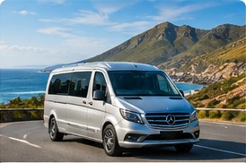

Airport & point-to-point
Airport and Private Transfers
Request transport between Cape Town International Airport, accommodation, cruise terminals, business locations and other destinations.
- Provide flight or pickup details
- Share passenger and luggage numbers
- Confirm price and availability before travel